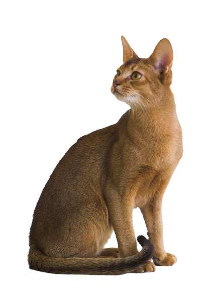

Lucy
6 years old
Female
4 Kilograms
Abyssinian Cat
Say hello to Lucy, the elegant Abyssinian cat with a golden heart! Lucy is the epitome of elegance with her chic coat and stunning amber eyes. She's ready to be your faithful friend; she's playful and loving. Lucy is a wonderful addition to your family; she is vaccinated, trained to use a litter box, and longs for a caring, forever home. Make Lucy a valued member of your family right now by getting in touch with us at PAWS for Love!